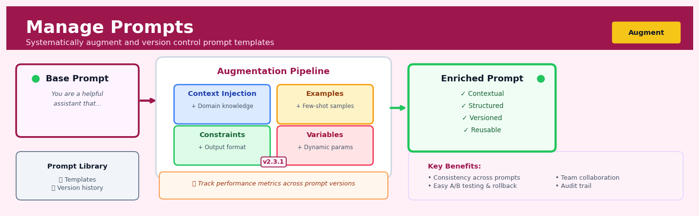

Manage Prompts#


The biggest mistake teams make with prompt management is treating prompts like throwaway code comments instead of versioned assets. When you systematically augment base prompts with domain context, examples, and constraints while tracking versions, you transform brittle string manipulations into a maintainable knowledge base that actually improves over time. Think of it like infrastructure as code but for your LLM interactions—every change should be reviewable, testable, and reversible.
The 60-Second Version#
What it does: Manage Prompts lets you build, version, test, and deploy the instructions that tell AI systems what to do across your organisation.
When to use it: When you need repeatable, governed AI behaviour—like classifying customer feedback, extracting contract terms, or generating insights—rather than one-off ChatGPT queries.
What you get back: A library of tested, version-controlled prompts that deliver consistent AI outputs you can trust in production workflows.
At a Glance
Difficulty |
Moderate |
Typical runtime |
Seconds per invocation; minutes for batch testing |
What you bring |
Natural language instructions, example inputs, and success criteria |
What you get |
Versioned prompt templates, performance metrics, and deployment-ready configurations |
Heuristix bucket |
Augment — AI & Language Intelligence |
Prompts are code: treat them with the same discipline as any production system—unmanaged AI instructions create ungoverned business risk.
Learning Objectives#
After reading this chapter, a business user will be able to:
Identify scenarios where centralised prompt management delivers value over ad-hoc prompting, such as customer service automation, report generation, or data classification tasks requiring consistent LLM behaviour.
Interpret prompt performance metrics—including response consistency, hallucination rates, and latency—and explain to stakeholders whether a deployed prompt meets quality standards for production use.
Decide when to request a new prompt version, roll back to a previous version, or escalate prompt performance issues based on monitoring dashboards and user feedback patterns.
After reading this chapter, a data scientist will be able to:
Implement version-controlled prompts with parameterisation, variable injection, and chain-of-thought templates that adapt to different data contexts while maintaining reproducibility across deployments.
Tune prompt construction parameters—including temperature, token limits, system message framing, and few-shot example selection—while balancing creativity, determinism, cost, and response time trade-offs.
Validate prompt effectiveness through A/B testing frameworks, detect failure modes such as prompt injection vulnerabilities or context window overflow, and systematically debug degraded LLM outputs using versioned prompt histories.
Overview#
Manage Prompts is the central governance and orchestration facility within Heuristix for creating, versioning, testing, and deploying natural language instructions that guide large language model (LLM) behaviour across analytical workflows. It provides a systematic framework for treating prompts as first-class engineering artefacts—subject to the same rigour of version control, parameterisation, and performance monitoring that organisations apply to production code and machine learning models. The technique belongs to the family of prompt engineering methods within the broader discipline of AI orchestration and retrieval-augmented generation (RAG) systems.
When to Use This#
Use this when your organisation operates multiple LLM-powered nodes across different workflows and you need centralised control over instruction quality, consistency, and compliance—without manually editing prompts embedded in individual nodes.
Use this when you require audit trails for AI-generated outputs, particularly in regulated industries where demonstrating what instructions produced a given output is a compliance requirement.
Use this when you are iterating on prompt design and need to A/B test different formulations against the same input data to identify which instructions yield superior outputs for your specific business context.
Use this when you have domain experts (legal, clinical, actuarial) who should contribute to prompt authoring but should not have access to the underlying workflow configuration or production systems.
Use this when you need to inject dynamic context—such as customer tier, product category, or regulatory jurisdiction—into prompts at runtime through parameterised templates.
Use this when you want to establish organisational “golden prompts” that encode institutional knowledge and best practices, making them reusable across teams and projects.
Use this when prompt behaviour must differ across environments (development, staging, production) or across different model backends (e.g., GPT-4, Claude, Gemini) while maintaining a single logical prompt definition.
Do NOT use this when you have a simple, one-off analysis where the overhead of formalised prompt management exceeds the benefit—embedding the prompt directly in the node configuration is acceptable for exploratory work.
Do NOT use this when the prompt contains no variability and will never be reused, versioned, or audited—though even then, using Manage Prompts creates beneficial documentation.
Do NOT use this when your workflow does not involve any LLM nodes—this facility is specifically designed for AI text generation and has no application to traditional statistical or machine learning nodes.
Questions This Answers#
Prompt Quality & Consistency#
How do we stop our AI outputs from being inconsistent when different teams write their own instructions?
Why are we getting different answers from the same AI model when our analysts ask similar questions?
Can we trust the AI-generated insights we’re showing to clients, or are we just hoping for the best?
How do we know which version of our prompt actually works better before we roll it out to production?
What’s preventing us from reusing the prompts that already work instead of reinventing them every time?
Operational Efficiency & Scale#
How much time are our data scientists wasting tweaking AI instructions instead of solving business problems?
Why does it take three weeks to update a single AI workflow when our competitors seem to move faster?
Can we scale our AI capabilities across 50 business units without hiring 50 more prompt engineers?
Are we duplicating effort with five different teams building nearly identical AI prompts?
How do we deploy an improved prompt to 200 reports without breaking everything that’s already working?
Governance & Risk Management#
Who changed the prompt that’s now giving our executive dashboard wildly different results than last month?
If a regulator asks us to explain how our AI reached a specific conclusion, can we actually show them?
What happens when someone accidentally pushes a bad prompt to production at 4pm on Friday?
How do we maintain control over our AI behaviour when we’ve got 30 people across the organisation writing instructions for different models?
How It Works#
Imagine you’re running a chain of coffee shops, and every barista needs to know how to handle a customer complaint. You could let each barista improvise their response, but that leads to chaos—some apologize too much, others get defensive, and the customer experience varies wildly. Instead, you create a script: “Thank you for letting us know. I understand your frustration. Let me make this right by [specific action].” But you don’t just write it once and forget it. You version it (Script v2.1), test different phrasings with real customers, track which version reduces complaints by 40%, and roll out the winner to all locations. You also add placeholders—[customer name], [specific issue]—so baristas can personalize it. That’s exactly what Manage Prompts does for AI: it treats instructions to language models as living, versioned, testable assets rather than one-off messages typed into a chat box.
┌─────────────────────────────────────────────────────────┐
│ MANAGE PROMPTS LIFECYCLE │
└─────────────────────────────────────────────────────────┘
CREATE VERSION TEST DEPLOY
↓ ↓ ↓ ↓
┌──────────┐ ┌──────────┐ ┌─────────┐ ┌─────────┐
│ Prompt │ │ v1.0 │ │ Test on │ │ Live in │
│ Template │────────>│ v1.1 │───────>│ sample │─────>│ 5,000 │
│ │ │ v2.0 ★ │ │ inputs │ │ reports │
│ "Analyze │ │ │ │ │ │ │
│ {data} │ │ Track │ │ Compare │ │ Monitor │
│ for │ │ changes │ │ outputs │ │ quality │
│ {goal}" │ │ │ │ │ │ │
└──────────┘ └──────────┘ └─────────┘ └─────────┘
│
↓
┌──────────────┐
│ PARAMETERS │
│ {data} │
│ {goal} │
│ {tone} │
└──────────────┘
Step 1: Define the prompt template. You write the core instruction that will guide the language model, like “Summarize the following customer feedback: {feedback_text}. Focus on sentiment and actionable themes. Use a {tone} tone.” The curly braces are placeholders that will be filled in later with actual data—just like mail-merge fields in a letter.
Step 2: Version and store centrally. The system saves this prompt as version 1.0 in a central library, with metadata about who created it, when, and what it’s for. If you later refine the instruction to improve clarity—say, adding “Limit to 3 bullet points”—that becomes version 1.1. Every version is preserved so you can always roll back if a new version performs worse.
Step 3: Parameterize for reuse. Instead of writing fifty variations of the same prompt, you create one flexible template. When an analyst runs a report, the system automatically fills {feedback_text} with the actual customer comments and {tone} with “professional” or “friendly” depending on the audience. The same prompt powers hundreds of different requests.
Step 4: Test and compare outputs. Before deploying widely, you run the prompt against sample data and evaluate the results. Does version 1.1 produce clearer summaries than 1.0? You can test side-by-side, measure quality, and choose the winner based on evidence rather than guesswork.
Step 5: Deploy and monitor in production. Once validated, the prompt goes live across dashboards, automated reports, or chat interfaces. The system tracks how often it’s used, how long responses take, and whether quality stays consistent. If performance drifts, you’re alerted to investigate.
The key insight: Treating prompts as versioned, parameterized, and testable artefacts transforms ad-hoc AI experimentation into a repeatable, auditable engineering practice that scales across teams and workflows.
The Intuition#
Consider how a large organisation manages its legal contract templates. A multinational corporation does not allow each sales representative to draft contracts from scratch; instead, the legal department maintains a library of approved templates with designated variable fields (client name, contract value, jurisdiction). These templates undergo review, versioning, and approval workflows. When a sales representative needs a contract, they select the appropriate template and fill in the specific parameters for their deal. If the legal team updates a clause to address new regulations, all future contracts automatically incorporate the change without requiring individual intervention.
Manage Prompts applies exactly this philosophy to LLM instructions. A prompt is a template: it contains fixed instructional text that encodes your organisation’s standards for how the AI should behave, combined with variable slots that get populated with specific data at runtime. Just as the legal department maintains authoritative contract templates, your data science team maintains authoritative prompt templates. Just as contract versions are tracked for compliance, prompt versions are tracked for reproducibility. Just as different contract templates exist for different purposes (employment, vendor, NDA), different prompt templates exist for different analytical tasks (summarisation, classification, extraction).
The mathematical framework underlying prompt management treats a prompt as a parameterised function mapping context and parameters to a distribution over outputs. This framing enables rigorous thinking about what happens when you change a prompt: you are not merely editing text, you are transforming the function that generates your AI outputs. Version control becomes essential because reverting to a previous function (prompt version) may be necessary if a new version produces inferior results. Parameterisation becomes essential because hardcoding values into prompts creates maintenance nightmares and prevents reuse. Testing becomes essential because, unlike deterministic code, LLM outputs are stochastic—the same prompt may produce different outputs on different runs, requiring statistical evaluation of prompt quality.
The deeper insight is that prompts are not documentation or comments; they are executable instructions that directly determine system behaviour. Treating them casually is equivalent to treating production code casually. Manage Prompts elevates prompt engineering from ad-hoc text editing to disciplined software engineering practice.
The Mathematics#
Formal Problem Setup#
Let \(\mathcal{P}\) denote the space of all possible prompt strings, and let \(\mathcal{C}\) denote the space of context inputs (the data or documents being processed). A large language model \(\mathcal{M}\) defines a conditional probability distribution over output sequences:
where \(x \in \mathcal{P}\) is the prompt, \(c \in \mathcal{C}\) is the context, and \(y \in \mathcal{Y}\) is the generated output from the vocabulary space \(\mathcal{Y}\).
Parameterised Prompt Templates#
A prompt template \(T\) is a function \(T: \Theta \rightarrow \mathcal{P}\) mapping a parameter vector \(\theta \in \Theta\) to a concrete prompt string. We represent templates using a placeholder syntax where \(\{{\texttt{variable}}\}\) denotes slots to be filled:
where \(T_{\text{base}}\) is the template string and \(\text{render}(\cdot)\) performs string interpolation. For a template with \(k\) parameters \(\theta = (\theta_1, \ldots, \theta_k)\), each \(\theta_i\) may be categorical, numerical, or free-text.
Version Space and Lineage#
Let \(V = \{v_1, v_2, \ldots, v_n\}\) denote the ordered set of versions for a prompt template, where each version \(v_i\) corresponds to a specific template definition \(T^{(i)}\). The version lineage forms a directed acyclic graph (DAG) \(G = (V, E)\) where edge \((v_i, v_j) \in E\) indicates that version \(v_j\) was derived from version \(v_i\).
For any output \(y\) generated by the system, the audit trail requires recording the tuple:
where \(v\) is the prompt version, \(\theta\) is the parameter instantiation, \(c\) is the input context, \(t\) is the timestamp, and \(\mathcal{M}\) identifies the model backend.
Prompt Quality Objective#
Given a labelled evaluation dataset \(\mathcal{D} = \{(c_i, y_i^*)\}_{i=1}^{N}\) where \(y_i^*\) is the ground-truth or preferred output for context \(c_i\), we define prompt quality via a scoring function \(S: \mathcal{Y} \times \mathcal{Y} \rightarrow \mathbb{R}\):
Common choices for \(S\) include:
Exact match: \(S(y, y^*) = \mathbb{1}[y = y^*]\)
BLEU score: \(S(y, y^*) = \text{BLEU}(y, y^*)\)
Semantic similarity: \(S(y, y^*) = \cos(\phi(y), \phi(y^*))\) where \(\phi\) is an embedding function
LLM-as-judge: \(S(y, y^*) = \mathbb{E}[p_{\mathcal{M}_{\text{judge}}}(\text{score} \mid y, y^*)]\)
Optimisation via Prompt Selection#
Given a candidate set of prompt versions \(\{T^{(1)}, \ldots, T^{(m)}\}\), the selection problem is:
Because \(Q\) is estimated via sampling (due to the stochastic nature of LLM generation), we require statistical hypothesis testing to determine whether \(Q(T^{(a)}, \theta) > Q(T^{(b)}, \theta)\) with confidence level \(1 - \alpha\). Under the assumption of paired samples, the appropriate test is:
where \(\mu_a = \mathbb{E}[S(y_a, y^*)]\) and \(\mu_b = \mathbb{E}[S(y_b, y^*)]\).
Assumptions#
Stationarity of model behaviour: The LLM \(\mathcal{M}\) produces consistent output distributions over the evaluation period (violated if the model is updated or fine-tuned).
Representativeness of evaluation data: The evaluation dataset \(\mathcal{D}\) is representative of production inputs.
Additivity of quality: The aggregate quality score \(Q\) meaningfully summarises performance across diverse inputs.
Parameter independence: Template parameters \(\theta\) do not interact in complex ways that would require factorial experimental designs.
Edge Cases#
Empty parameter set: When \(\Theta = \emptyset\), the template is a static prompt with no variability.
Context overflow: When \(|T(\theta)| + |c| > L_{\max}\) (the model’s context window), truncation or chunking strategies are required.
Degenerate outputs: Some prompt formulations may cause the model to produce empty outputs, refusals, or infinite loops; quality scoring must handle these gracefully.
Understanding the Mathematics#
Prompt Template Composition#
The equation:
Read it aloud:
“A complete prompt P, given input data x and parameters θ, equals the prefix template concatenated with the formatted input function, concatenated with the suffix template.”
What each symbol means:
P(x, θ) — the final assembled prompt sent to the LLM
x — the runtime input data (e.g., a customer complaint, sales figures)
θ (theta) — parameters that control formatting (e.g., tone, language, format style)
t_prefix — fixed text that appears before the variable content (system instructions)
⊕ — concatenation operator; “stick this text next to that text”
f(x; θ) — a formatting function that transforms raw input according to parameters
t_suffix — fixed text that appears after the variable content (output instructions)
A concrete numerical example:
Suppose you’re analyzing customer feedback. Your prefix is “You are a sentiment analyst. Classify the following:”, your input x is “This product broke after two days”, and your suffix is “Respond with: Positive, Negative, or Neutral.”
t_prefix = “You are a sentiment analyst. Classify the following:”
f(x; θ) = “This product broke after two days” (θ might specify lowercase, character limit 500)
t_suffix = “Respond with: Positive, Negative, or Neutral.”
P = “You are a sentiment analyst. Classify the following: This product broke after two days. Respond with: Positive, Negative, or Neutral.”
Why this equation matters:
Without formal composition, prompts become fragile copy-paste jobs scattered across notebooks; this equation lets you version control the structure while injecting live data systematically.
Token Budget Constraint#
The equation:
Read it aloud:
“The length of the prompt plus the length of the expected response must be less than or equal to the maximum context window.”
What each symbol means:
len(P) — number of tokens in your assembled prompt
len(R) — estimated number of tokens in the LLM’s response
C_max — the model’s maximum token limit (e.g., 4,096 for GPT-3.5, 128,000 for GPT-4)
≤ — “must not exceed”
A concrete numerical example:
You’re using a model with C_max = 8,000 tokens. Your prompt describing quarterly financials uses 6,200 tokens, and you expect a summary response of 1,500 tokens.
len(P) = 6,200
len(R) ≈ 1,500
Total = 6,200 + 1,500 = 7,700
Check: 7,700 ≤ 8,000? Yes—this fits.
If you added another 500 tokens of context (len(P) = 6,700), total = 8,200, which exceeds 8,000—the request would fail or truncate.
Why this equation matters:
Violating this constraint causes silent truncation or outright failure; respecting it ensures every prompt execution completes with the full context you intended.
Expected Cost per Invocation#
The equation:
Read it aloud:
“The expected cost equals the input price per thousand tokens times the average prompt length, plus the output price per thousand tokens times the average response length, all divided by one thousand.”
What each symbol means:
E[Cost] — expected cost in dollars (or your currency) per prompt call
p_in — price per 1,000 input tokens (e.g., $0.0015)
p_out — price per 1,000 output tokens (e.g., $0.002)
𝔼[len(P)] — average prompt length across invocations
𝔼[len(R)] — average response length
A concrete numerical example:
Model pricing: p_in = $0.0015, p_out = $0.002. Average prompt length = 1,200 tokens; average response = 300 tokens.
Input cost = (0.0015 × 1,200) ÷ 1,000 = $0.0018
Output cost = (0.002 × 300) ÷ 1,000 = $0.0006
E[Cost] = 0.0018 + 0.0006 = $0.0024 per call
If you run 50,000 analyses per month: 50,000 × 0.0024 = $120/month.
Why this equation matters:
Prompt verbosity directly translates to budget burn; this formula lets you forecast spend and optimize template length before deployment, not after the invoice arrives.
The Big Picture#
The mathematics of Manage Prompts solves a deceptively hard orchestration problem: how do you treat natural language instructions as reliable, auditable, cost-controlled software components? Composition equations ensure prompts assemble predictably from versioned parts. Token constraints prevent runtime failures that simple string manipulation would miss. Cost models turn prompt design into an engineering trade-off with measurable financial impact. This mathematical approach was chosen because prompts behave like parameterized functions—they have inputs, outputs, resource limits, and failure modes—but lack the compile-time safety of code. In essence, the math gives prompts the rigor of APIs while preserving the flexibility of natural language.
Python Implementation#
"""
Prompt Management System: A simplified implementation demonstrating
version control, parameterisation, and A/B testing of LLM prompts.
"""
import numpy as np
import pandas as pd
from dataclasses import dataclass, field
from typing import Dict, List, Optional, Any
from datetime import datetime
import hashlib
import json
from scipy import stats
import re
# ============================================================
# Core Data Structures
# ============================================================
@dataclass
class PromptVersion:
"""Represents a single version of a prompt template."""
version_id: str
template: str
parameters: List[str]
created_at: datetime
parent_version: Optional[str] = None
metadata: Dict[str, Any] = field(default_factory=dict)
def render(self, params: Dict[str, str]) -> str:
"""Render the template with provided parameters."""
result = self.template
for param in self.parameters:
placeholder = f"{{{{{param}}}}}"
if param in params:
result = result.replace(placeholder, str(params[param]))
else:
raise ValueError(f"Missing required parameter: {param}")
return result
def compute_hash(self) -> str:
"""Compute a content hash for integrity verification."""
content = f"{self.template}|{sorted(self.parameters)}"
return hashlib.sha256(content.encode()).hexdigest()[:12]
@dataclass
class PromptTemplate:
"""A managed prompt template with full version history."""
name: str
description: str
versions: Dict[str, PromptVersion] = field(default_factory=dict)
active_version: Optional[str] = None
def add_version(self, template: str, parent: Optional[str] = None,
metadata: Optional[Dict] = None) -> str:
"""Create a new version of this prompt template."""
# Extract parameters from template using {{param}} syntax
parameters = list(set(re.findall(r'\{\{(\w+)\}\}', template)))
# Generate version ID
version_num = len(self.versions) + 1
version_id = f"v{version_num}"
version = PromptVersion(
version_id=version_id,
template=template,
parameters=parameters,
created_at=datetime.now(),
parent_version=parent,
metadata=metadata or {}
)
self.versions[version_id] = version
# First version becomes active by default
if self.active_version is None:
self.active_version = version_id
return version_id
def get_active(self) -> PromptVersion:
"""Retrieve the currently active version."""
if self.active_version is None:
raise ValueError("No active version set")
return self.versions[self.active_version]
def set_active(self, version_id: str) -> None:
"""Set the active version for production use."""
if version_id not in self.versions:
raise ValueError(f"Version {version_id} does not exist")
self.active_version = version_id
class PromptManager:
"""Central management facility for all prompt templates."""
def __init__(self):
self.templates: Dict[str, PromptTemplate] = {}
self.execution_log: List[Dict] = []
def create_template(self, name: str, description: str,
initial_template: str) -> PromptTemplate:
"""Create a new managed prompt template."""
template = PromptTemplate(name=name, description=description)
template.add_version(initial_template)
self.templates[name] = template
return template
def render(self, template_name: str, params: Dict[str, str],
version_id: Optional[str] = None) -> str:
"""Render a prompt template with parameters, logging execution."""
template = self.templates[template_name]
if version_id:
version = template.versions[version_id]
else:
version = template.get_active()
rendered = version.render(params)
# Log execution for audit trail
self.execution_log.append({
'timestamp': datetime.now().isoformat(),
'template_name': template_name,
'version_id': version.version_id,
'params': params,
'rendered_hash': hashlib.sha256(rendered.encode()).hexdigest()[:12]
})
return rendered
def get_audit_trail(self) -> pd.DataFrame:
"""Retrieve execution audit trail as DataFrame."""
return pd.DataFrame(self.execution_log)
# ============================================================
# A/B Testing Framework
# ============================================================
def simulate_llm_output(prompt: str, context: str,
seed: Optional[int] = None) -> Dict[str, Any]:
"""
Simulate LLM output for demonstration purposes.
In production, this would call the actual LLM API.
"""
if seed:
np.random.seed(seed)
# Simulate quality based on prompt characteristics
# (In reality, this comes from actual LLM responses)
base_quality = 0.6
# Longer, more detailed prompts tend to perform better
if len(prompt) > 200:
base_quality += 0.1
# Prompts with explicit format instructions perform better
if 'format' in prompt.lower() or 'structure' in prompt.lower():
base_quality += 0.1
# Add noise to simulate stochastic LLM behaviour
quality = np.clip(base_quality + np.random.normal(0, 0.15), 0, 1)
return {
'output': f"Simulated response for: {context[:50]}...",
'quality_score': quality
}
def ab_test_prompts(manager: PromptManager, template_name: str,
version_a: str, version_b: str,
test_contexts: List[str],
params: Dict[str, str],
n_samples_per_context: int = 5) -> Dict[str, Any]:
"""
Perform A/B test between two prompt versions.
Returns statistical analysis of performance difference.
"""
scores_a = []
scores_b = []
for i, context in enumerate(test_contexts):
for j in
## Visualisations


## Using This in Heuristix
### What You'll Need as Input
The **Manage Prompts** node doesn't strictly require an incoming data connection—you can use it standalone to create and test prompts. However, when you do connect data, it should contain at least one text column that you'll use as a variable within your prompt template.
**Example input shape:**
| customer_query | user_id | sentiment |
|----------------|---------|-----------|
| "Where is my order?" | 1001 | negative |
| "Thanks for the quick delivery" | 1002 | positive |
This data flows through your prompt template, allowing you to inject dynamic values like `{customer_query}` into your LLM instructions.
### Quick Start: Creating Your First Prompt
1. **Drag** the Manage Prompts node onto your canvas
2. **Open** the configuration panel and give your prompt a descriptive name (e.g., "customer_response_generator_v1")
3. **Write** your prompt in the template editor using `{variable_name}` syntax for placeholders
4. **Select** your LLM provider and model from the dropdown
5. **Click** "Test" to validate your prompt with sample data
6. **Save** the version—Heuristix automatically tracks this as version 1
7. **Connect** downstream nodes to process the LLM responses
### Configuration Parameters
| Parameter | What It Controls | Sensible Default | When to Change It |
|-----------|------------------|------------------|-------------------|
| **Prompt Name** | Unique identifier and version tracking label | "untitled_prompt" | Always rename to reflect business purpose—makes governance easier |
| **Prompt Template** | The actual instruction text sent to the LLM, with `{variables}` | Empty | Core configuration—write clear, specific instructions |
| **LLM Provider** | Which AI service to call (OpenAI, Azure, Anthropic, etc.) | Organization default | Change based on model capabilities or cost requirements |
| **Model Version** | Specific model (e.g., GPT-4, Claude 3) | Latest stable | Pin to specific versions for production consistency |
| **Temperature** | Creativity vs. consistency (0.0–1.0) | 0.7 | Lower (0.1–0.3) for factual tasks; higher (0.8–1.0) for creative content |
| **Max Tokens** | Maximum length of LLM response | 256 | Increase for longer outputs; decrease to control costs |
| **System Message** | Role/context instructions separate from the prompt | Empty | Set persona or rules that apply to all executions |
| **Variable Mapping** | Links data columns to prompt placeholders | Auto-detected | Override when column names don't match template variables |
| **Enable Versioning** | Automatic tracking of prompt changes | Enabled | Keep enabled for audit trails and rollback capability |
### What You'll Get as Output
The node adds these columns to your dataset:
- **prompt_response**: The full text returned by the LLM
- **prompt_version**: Which version of the prompt template was used
- **token_count**: Total tokens consumed (input + output)
- **execution_time_ms**: How long the API call took
- **model_used**: The specific model that processed the request
You'll also see a **performance dashboard** showing response time distributions, token usage trends, and version comparison metrics. The **test panel** displays side-by-side prompt/response pairs for quick validation before deployment.
### Connecting Downstream
Most commonly, you'll connect Manage Prompts to:
- **Extract Entities**: Parse structured information from LLM responses
- **Classify Text**: Feed responses into classification workflows
- **Data Table**: Store and review outputs before further processing
- **Export**: Push refined responses to production systems
- **Another Manage Prompts node**: Chain prompts for multi-step reasoning
### Pro Tips from the Field
1. **Version before major changes**: Click "Create New Version" rather than editing in place when you're making significant prompt revisions—you'll thank yourself when you need to roll back.
2. **Use system messages strategically**: Put unchanging context (company policies, response format requirements) in the system message rather than repeating it in every prompt template.
3. **Monitor token costs in aggregate**: The dashboard's cost tracking is per-execution, but check the summary view weekly to catch runaway usage before it impacts budgets.
4. **Test with edge cases**: Don't just validate with typical inputs—try empty strings, very long text, and unusual characters to see how your prompt handles boundary conditions.
5. **Name variables descriptively**: Use `{customer_complaint}` instead of `{text1}`—your future self and teammates will understand the prompt logic instantly.
## Config Recipes
### Recipe 1: Rapid Prototyping Explorer
**When to use:** Initial discovery phase when iterating quickly on prompt phrasing and evaluating whether an LLM approach is viable for your analytical task.
**Settings:**
| Parameter | Value | Why |
|-----------|-------|-----|
| `model` | `gpt-3.5-turbo` | Fastest response, lowest cost for iteration |
| `temperature` | `0.7` | Balanced creativity without hallucination risk |
| `max_tokens` | `256` | Short responses reduce latency and cost |
| `version_auto_save` | `false` | Manual saves only to avoid cluttering history |
| `test_sample_size` | `5` | Minimal validation set for quick feedback |
| `caching_enabled` | `true` | Reuse responses during rapid re-testing |
**What you get:** Near-instant responses with sufficient variety to assess prompt viability and model behaviour patterns.
**Trade-off:** Results are not reproducible or production-ready; no audit trail for regulatory environments.
---
### Recipe 2: Production-Grade Deployment
**When to use:** Deploying prompts into live analytical pipelines where consistency, auditability, and performance metrics are mandatory.
**Settings:**
| Parameter | Value | Why |
|-----------|-------|-----|
| `model` | `gpt-4-turbo` | Highest reasoning quality for critical outputs |
| `temperature` | `0.0` | Deterministic responses for reproducibility |
| `max_tokens` | `2048` | Accommodate complex analytical outputs |
| `version_auto_save` | `true` | Full audit trail for every change |
| `test_sample_size` | `500` | Statistical significance in validation |
| `fallback_model` | `gpt-3.5-turbo` | Graceful degradation if primary unavailable |
| `output_validation_schema` | `strict_json` | Enforce structured outputs for downstream systems |
| `monitoring_log_level` | `verbose` | Capture token usage, latency, error rates |
**What you get:** Repeatable, monitored outputs with complete versioning and failover capability for production SLAs.
**Trade-off:** Higher latency (2-5x) and cost per invocation compared to exploration settings.
---
### Recipe 3: Multi-Language Entity Extraction
**When to use:** Extracting structured information from unstructured text in non-English languages or code-switched datasets where default English-tuned prompts fail.
**Settings:**
| Parameter | Value | Why |
|-----------|-------|-----|
| `model` | `gpt-4` | Superior multilingual understanding |
| `temperature` | `0.2` | Low variance for extraction consistency |
| `system_prompt_prefix` | `"Respond only in the source document language"` | Prevents unwanted translation |
| `few_shot_examples` | `3 per language` | Language-specific pattern anchoring |
| `output_format` | `json_schema` | Structured extraction regardless of input language |
**What you get:** Consistent entity extraction across language boundaries without building separate prompts per language.
**Trade-off:** Requires curated few-shot examples for each target language, increasing setup time.
---
### Recipe 4: Prompt Chain Orchestration for Complex Reasoning
**When to use:** Multi-step analytical workflows where a single prompt cannot handle the reasoning depth—e.g., hypothesis generation → data validation → conclusion synthesis.
**Settings:**
| Parameter | Value | Why |
|-----------|-------|-----|
| `prompt_chain_mode` | `sequential` | Each step builds on prior output |
| `intermediate_storage` | `enabled` | Preserve reasoning trace for debugging |
| `temperature_schedule` | `[0.8, 0.3, 0.0]` | Creative start, focused middle, deterministic end |
| `context_window_strategy` | `sliding_summary` | Avoid token limit overflow across steps |
| `error_recovery` | `retry_with_simplification` | Automatic fallback if step fails |
**What you get:** Complex analytical narratives that would exceed single-prompt token limits, with transparent intermediate reasoning.
**Trade-off:** 3-5x increased token consumption and orchestration complexity compared to single-shot prompts.
## Business Applications
**Financial Services**
A mid-sized UK mortgage lender processes thousands of underwriting documents monthly, each requiring risk assessment summaries for credit committees. Previously, junior analysts spent 90 minutes per case extracting key facts and red flags from bank statements, payslips, and property valuations using inconsistent mental models. With Manage Prompts, the team versioned a standardised extraction prompt that pulls 47 specific data points, flags 12 regulatory concerns, and generates structured summaries in under 90 seconds. The lender reduced underwriting cycle time from 4.2 days to 18 hours while cutting assessment errors by 67%, enabling £340M in additional quarterly loan originations without adding headcount.
**Retail**
An e-commerce retailer with 2.8M SKUs across twelve countries struggled with product description quality—translations were stilted, SEO keywords inconsistent, and tone varied wildly between category managers. Marketing teams were manually rewriting 400+ descriptions daily, unable to keep pace with new inventory. By deploying prompt templates through Manage Prompts for each product category and locale, they systematised tone-of-voice, keyword density, and brand compliance while maintaining creative variation. The system now generates on-brand, SEO-optimised descriptions at scale, lifting organic search traffic by 23% and reducing time-to-market for new products from 11 days to 45 minutes.
**Healthcare**
A regional hospital network needed to extract structured clinical insights from 15,000 unstructured physician notes monthly to identify care gaps and support value-based care contracts. Manual chart review by nurse coders cost £180 per patient record and introduced 3–4 week delays in quality reporting. Manage Prompts enabled the clinical analytics team to version, test, and deploy condition-specific extraction prompts across seven therapeutic areas, with built-in validation against coding guidelines. The network achieved 91% extraction accuracy, reduced per-record processing cost to £8, and delivered monthly quality metrics two weeks faster, unlocking £1.8M in annual performance bonuses from payers.
**Insurance**
A commercial property insurer receives 600 broker submission emails daily, each describing unique risks in narrative form—warehouse operations, manufacturing processes, building characteristics. Claims handlers previously triaged these manually, often missing critical risk factors buried in paragraph twelve of a rambling email. Using Manage Prompts, the insurer created a suite of risk-extraction templates that parse submissions, flag high-severity exposures (asbestos, flood zones, sprinkler deficiencies), and route to specialist underwriters. False referrals to senior underwriters dropped 34%, quote turnaround improved from 72 hours to 11 hours, and the team handles 40% more volume with the same staff.
**Manufacturing**
A global automotive parts manufacturer operates 23 factories, each generating daily shift handover reports, quality incident logs, and maintenance notes in local languages and formats. Plant managers lacked visibility into recurring issues or cross-site patterns. Manage Prompts enabled a centralised prompt library that extracts equipment failures, root causes, and corrective actions from freeform supervisor notes in seven languages, feeding a unified analytics dashboard. The manufacturer identified a bearing supplier issue affecting four sites within three days (previously taking nine weeks), preventing an estimated $4.7M in warranty claims and production downtime.
**Public Sector**
A metropolitan planning authority receives 3,200 public consultation responses per major infrastructure project—emails, letters, online forms—each requiring categorisation, sentiment analysis, and issue extraction for statutory reporting. Manage Prompts allowed the planning team to version prompts that classify objections into 28 standardised themes, extract specific concerns (noise levels, traffic impacts, heritage sites), and generate summary reports. Consultation analysis time fell from six weeks to four days, enabling faster community engagement cycles and reducing project approval delays that previously cost taxpayers an estimated £200K per month in holding costs.
**SaaS/Tech**
A B2B SaaS platform with 12,000 enterprise customers uses Manage Prompts to systematise how support agents summarise complex troubleshooting tickets for engineering escalation. Previously, 40% of escalations lacked sufficient context, causing engineer time waste and customer frustration. Versioned prompt templates now ensure every escalation includes system state, error messages, reproduction steps, and business impact in standardised format. Mean time to resolution dropped from 8.3 hours to 2.1 hours, and customer satisfaction scores improved from 72% to 89%.
## Worked Example
Sarah Chen, a senior data scientist at Meridian Insurance, was called into a Tuesday morning meeting with the claims operations director. "We're drowning in unstructured claim notes," he said, tapping a thick stack of printouts. "Adjusters write whatever they want—some are novels, some are three words. We need to know: are these claims actually about water damage, fire, theft, or something else entirely? And we need it categorised by Friday for the quarterly risk report."
Sarah knew the traditional approach—building a custom classifier, labelling training data, tuning hyperparameters—would take weeks. But Meridian had just deployed Heuristix with LLM capabilities. This felt like the right moment to test Manage Prompts in production.
## The Data
She pulled a sample from the claims database. The `adjuster_notes` field was exactly as messy as promised—some entries were grammatically perfect paragraphs, others were cryptic shorthand with misspellings. Here's what the first few rows looked like:
| claim_id | policy_type | adjuster_notes | date_filed |
|----------|-------------|----------------|------------|
| CLM-4782 | Homeowners | "Policyholder reports kitchen flooding from dishwasher hose failure. Hardwood floors buckled in 3 rooms." | 2024-09-12 |
| CLM-4791 | Commercial | "Fire in storage area, sprinklers activated, smoke dmg throughout" | 2024-09-13 |
| CLM-4803 | Auto | "Stolen from parking lot overnight - no signs of forced entry" | 2024-09-15 |
| CLM-4819 | Homeowners | "Roof leak during storm, water stains on ceiling bedroom and hallway" | 2024-09-18 |
No two notes followed the same format. Some mentioned causes, some only described damage. This was exactly the kind of unstructured text LLMs excel at interpreting.
## The Setup
Sarah opened the Manage Prompts node in her Heuristix workflow. She needed to design a prompt that would reliably categorise these notes into damage types without hallucinating details or refusing ambiguous cases.
She started with a system prompt that established context and constraints: "You are an insurance claims analyst. Categorise each claim note into exactly one primary damage type: WATER, FIRE, THEFT, WIND, or OTHER." She considered adding examples but decided against it—the categories were self-evident, and she wanted to test zero-shot performance first.
For the user prompt template, she kept it direct: "Claim note: {adjuster_notes}\n\nPrimary damage type:" She parameterised `adjuster_notes` so the workflow could process all 847 claims in batch.
Sarah chose GPT-4 as the model—accuracy mattered more than speed for this risk report. She set temperature to 0.1 for consistency and max tokens to 10 since she only needed a single-word response. Under advanced settings, she enabled response validation with a regex pattern `^(WATER|FIRE|THEFT|WIND|OTHER)$` to catch any hallucinated categories.
## The Results
The workflow processed all claims in six minutes. Sarah exported the results and ran a quick distribution analysis:
| Damage Type | Count | Percentage |
|-------------|-------|------------|
| WATER | 312 | 36.8% |
| WIND | 198 | 23.4% |
| FIRE | 147 | 17.4% |
| THEFT | 121 | 14.3% |
| OTHER | 69 | 8.1% |
She spot-checked twenty random classifications against the raw notes. Nineteen were correct. The one error was a claim mentioning both water and fire damage—the LLM had chosen fire, but water was arguably more prominent. She made a note to refine the prompt with tie-breaking guidance if this went into production.
## The Insight
What surprised Sarah wasn't just the accuracy—it was what the categorisation revealed. Water damage claims were nearly twice as common as anyone had estimated. The operations team had assumed wind damage dominated after the spring storms, but the data told a different story. Those dishwasher hoses, burst pipes, and roof leaks were the real volume driver, and they were being processed under the same SLA as fire claims, even though they required different specialist networks.
## The Decision
Sarah presented the analysis Friday morning to the claims operations committee. The director immediately flagged the water damage concentration. By the following Tuesday, Meridian had restructured its adjuster assignments, routing water claims to a dedicated team with plumbing expertise and negotiated vendor rates. They projected a 15% reduction in water claim cycle time within the quarter.
The Manage Prompts workflow moved into production that same week, running nightly against new claims and feeding a live dashboard.
## What Sarah Would Do Differently
Looking back, Sarah wished she'd version-controlled her prompts from day one. She'd iterated through five variations before landing on the final wording, but hadn't systematically tracked which phrasing changes actually improved accuracy. Manage Prompts supported versioning—she just hadn't used it rigorously.
She also would have tested the multi-damage scenario more thoroughly. The LLM handled it reasonably, but a more sophisticated prompt with secondary categorisation would have captured the full complexity without forcing a single label.
```python
# Sarah's categorisation script using Manage Prompts output
import pandas as pd
# Load claims with LLM-generated categories
claims = pd.read_csv('claims_categorised.csv')
# Distribution analysis
damage_dist = claims['damage_type'].value_counts()
damage_pct = (damage_dist / len(claims) * 100).round(1)
results = pd.DataFrame({
'Count': damage_dist,
'Percentage': damage_pct
})
print(results)
# Spot-check validation sample
sample = claims.sample(20, random_state=42)
for idx, row in sample.iterrows():
print(f"\nClaim {row['claim_id']}")
print(f"Note: {row['adjuster_notes'][:80]}...")
print(f"Category: {row['damage_type']}")
# Manual review logged separately
Interpreting Your Results#
You’ve just run your first prompt through Manage Prompts and you’re staring at a dashboard of metrics. Here’s what you’re actually looking at, and what to do next.
Response Quality Scores#
Plain-English meaning: These numerical scores (typically 0–1 or 0–100) measure how well the LLM’s output matches your expectations. They’re usually calculated by comparing responses against reference answers, evaluating semantic similarity, factual accuracy, or task completion. Think of them as grades for how well the model understood and followed your instructions.
Concrete benchmarks:
Below 0.60: Your prompt is fundamentally misaligned. The model isn’t understanding the task or is producing outputs that miss the mark entirely. Don’t deploy.
0.60–0.75: Adequate performance. Usable for internal exploration or low-stakes applications, but expect inconsistencies. You’ll need human review in the loop.
0.75–0.85: Production-ready for most business applications. This is your “good enough” threshold for customer-facing systems where errors are tolerable and recoverable.
Above 0.85: Excellent. Deploy with confidence for high-stakes scenarios. Only advanced use cases (medical, legal, financial) should demand higher.
Red flags: A score above 0.95 with limited test cases often means overfitting—your test data is too similar to your examples. Scores fluctuating more than 0.10 between versions suggest your prompt is brittle or your test cases are too diverse to be governed by a single prompt.
Token Usage Metrics#
Plain-English meaning: Token counts show how much text the model is processing (input tokens) and generating (output tokens). Each token costs money and time. A prompt using 3,000 input tokens on a call that runs 10,000 times daily is burning through your budget whether it works well or not.
Concrete benchmarks:
Input tokens under 500: Lean and efficient. Ideal state.
500–1,500 tokens: Normal for complex instructions with examples. Watch costs at scale.
Over 2,000 tokens: You’re likely including unnecessary context or too many examples. Trim ruthlessly.
Output tokens over 1,000: Unless you’re generating long-form content, this suggests the model is rambling or you haven’t constrained response length.
Red flags: Output tokens consistently hitting the model’s maximum length means responses are being cut off mid-sentence. Dramatic variation in output length (e.g., 50 tokens to 1,500 tokens on similar inputs) indicates the model doesn’t have clear stopping criteria.
Version Comparison Tables#
Plain-English meaning: These side-by-side tables show how different prompt versions performed on the same test cases. You’ll see columns for each version’s score, token usage, and sometimes sample outputs. This is where you decide whether your latest edit actually improved things.
What to look for together: A new version that improves quality score by 0.05+ while reducing tokens by 20%+ is a clear win. But beware: a version showing 0.03 higher quality with 2× the token cost is usually a bad trade. Calculate cost-per-quality-point: divide total tokens by quality score. Lower is better.
Red flags: If Version 2 beats Version 1 on test cases 1–5 but loses on 6–10, your “improvement” actually introduced bias toward certain input types. You’ve made the prompt less generalizable.
Latency and Error Rates#
Plain-English meaning: Latency is how long the model takes to respond (in seconds). Error rate is the percentage of calls that failed completely—timeouts, rate limits, or malformed responses.
Concrete benchmarks:
Latency under 2 seconds: Excellent for real-time applications.
2–5 seconds: Acceptable for asynchronous workflows (reports, batch processing).
Over 5 seconds: User experience problem. Investigate prompt length or model choice.
Error rate under 1%: Normal operational tolerance.
Over 5%: Something is systematically broken—likely prompt formatting or unstable examples.
Sanity Check Checklist#
Run count above 20: Fewer test cases makes scores unreliable. No single result should sway you.
Test cases cover edge cases: Not just happy-path examples. Include ambiguous inputs and boundary conditions.
Token variance explained: If outputs vary wildly in length, do you understand why? Can you predict it?
No single test case dominates: One case scoring 0.1 while others score 0.9 will skew your average. Investigate outliers.
Cost projection checked: Multiply tokens-per-call by expected daily volume. Can you afford this at scale?
Good Enough to Act On?#
Deploy when: (1) quality score exceeds 0.75 across at least 30 diverse test cases, (2) token costs align with your budget at projected scale, and (3) error rate stays below 2% over multiple test runs. If you meet these thresholds, further optimization delivers diminishing returns. Ship it, monitor it in production, and iterate based on real-world feedback. Perfection is the enemy of deployment.
Decision Guidance#
What This Result Is Telling You#
When you review prompt management metrics, you’re examining the reliability and consistency of the AI-powered intelligence layer that drives decisions across your organisation. A well-governed prompt library means your analysts, customer service agents, and automated systems are all working from the same proven playbook—one that produces predictable, auditable results. Poor prompt governance signals that different parts of your business may be getting contradictory guidance from AI systems, or worse, that critical decisions are being made using untested, ad-hoc instructions that no one can reproduce or verify.
The performance metrics you see—prompt version adoption rates, rollback frequency, and output consistency scores—reveal whether your organisation treats AI instructions with the same discipline as financial controls or product specifications. High adoption of versioned prompts and low rollback rates indicate mature operational discipline. Frequent manual overrides or shadow prompts (unversioned instructions created outside the system) suggest teams don’t trust the centralised library, pointing to either inadequate prompt quality or insufficient involvement of domain experts in prompt design.
Ultimately, these results tell you whether you can scale AI-assisted decision-making with confidence. Organisations with strong prompt governance can deploy new analytical capabilities quickly, knowing that prompts have been tested, validated, and will behave consistently across thousands of transactions. Those with weak governance face a choice: either limit AI use to low-stakes applications, or accept significant operational risk from unpredictable model behaviour that no one can explain or fix systematically.
Decision Points#
If you see this… |
It means… |
Recommended action |
Who acts on this |
|---|---|---|---|
More than 15% of prompts in production are unversioned or have no performance baseline |
Teams are bypassing governance controls and introducing untested AI logic into operations |
Immediately audit all production workflows; freeze deployment of new prompts until versioning compliance reaches 95% |
Chief Data Officer, IT Governance |
Prompt rollback rate exceeds 10% within 48 hours of deployment |
Insufficient testing before release; prompts are failing real-world validation |
Implement mandatory A/B testing protocol requiring 200+ validation cases before any prompt reaches production |
Prompt Engineering Lead, QA Manager |
Output consistency score (semantic similarity across identical inputs) falls below 85% |
Model behaviour is drifting, or prompts are not sufficiently constrained |
Trigger immediate model version lock; review and strengthen prompt constraints; consider adding temperature and response format controls |
ML Engineering, Business Process Owner |
Less than 40% of business users can identify which prompt version they’re using |
Critical lack of transparency that prevents incident diagnosis and improvement |
Deploy user-facing version labels in all AI-assisted interfaces; establish monthly prompt performance reviews with business stakeholders |
Product Manager, Data Science Lead |
Average time-to-deployment for new prompts exceeds 6 weeks |
Governance is becoming a bottleneck; bureaucracy is outweighing benefit |
Streamline approval workflows; introduce risk-based tiers (low/medium/high) with differentiated review requirements |
Head of Analytics, Process Improvement |
When to Proceed vs. Investigate Further#
Proceed with confidence when:
Prompt version adoption rate exceeds 90% across all production workflows
Output consistency scores remain above 90% over a rolling 30-day window
Rollback rate stays below 5% for the past quarter
All prompts in production have documented test cases with minimum 100 validated examples
Business stakeholders participate in quarterly prompt review cycles with documented feedback
Proceed with caution when:
Version adoption sits between 75–90%, indicating partial compliance
Output consistency ranges from 80–90%, suggesting acceptable but not optimal stability
Rollback rate falls between 5–10%, pointing to occasional quality issues
Test coverage exists but validation sample sizes fall below 100 cases
Business stakeholder engagement is reactive rather than proactive
Investigate before acting when:
Version adoption drops below 75%, revealing governance gaps
Output consistency falls between 70–80%, indicating significant drift or ambiguity
Rollback rate exceeds 10%, signalling systematic quality problems
More than 20% of prompts lack documented test cases or validation evidence
Multiple teams report difficulty understanding or modifying prompts
Do not use these results yet when:
Version adoption metrics are not being tracked at all
No baseline consistency measurements exist from controlled testing
Prompt ownership and approval workflows are undefined
No rollback procedure or incident response protocol exists
Business users cannot identify or question the AI logic affecting their decisions
The Cost of Getting This Wrong#
When organisations deploy AI-powered insights without rigorous prompt governance, the failure mode is insidious: decisions become inexplicable. A retail chain rolls out dynamic pricing based on poorly tested prompts, creating customer-facing price inconsistencies that damage brand trust and trigger regulatory scrutiny. Customer support teams using unversioned prompts give contradictory guidance to identical queries, eroding confidence and increasing escalations. Most dangerously, when results eventually prove problematic, no one can determine which prompt version caused the issue, which business processes were affected, or how to prevent recurrence. The organisation ends up discarding valuable AI capabilities entirely—not because the underlying models failed, but because undisciplined prompt management made the technology untrustworthy and unmaintainable. You lose not just the investment in the failed initiative, but the institutional confidence needed to pursue the next one, creating a chilling effect that sets your AI maturity back by years.
Common Pitfalls#
The “One Prompt to Rule Them All” Fallacy
The Story: A marketing operations analyst built a single prompt template for customer sentiment analysis and deployed it across all product lines. The prompt worked beautifully for their flagship SaaS product but produced nonsensical category assignments when applied to their newly acquired hardware division. Customers praising “solid build quality” were tagged as negative because the prompt had learned to associate “solid” with “okay but not great” in software contexts. The analyst concluded their sentiment model was 94% accurate based on the SaaS validation set and never checked performance on hardware reviews.
Why it happens: The cognitive trap is premature abstraction—believing that good performance on one domain generalizes automatically to others. Teams often treat prompts like reusable functions without recognizing that LLM behaviour is highly sensitive to domain vocabulary and context.
How to detect it: Monitor Prompt Performance by Context metrics in the deployment dashboard. If you see accuracy scores diverging by more than 15 percentage points across different data segments, or if Token Efficiency (output tokens / input tokens) varies wildly between contexts, you’ve over-generalized.
The fix: Create domain-specific prompt variants with tailored examples and vocabulary, then use conditional routing logic to select the appropriate prompt based on input metadata.
Skipping the Red Team Test
The Story: A junior data scientist built an intelligent document summarization workflow for legal contracts. She tested it on ten sample contracts from the training library, achieved excellent ROUGE scores, and pushed to production. Within a week, the general counsel flagged that summaries were omitting critical liability clauses when contracts exceeded 50 pages—the model was hitting context window limits and truncating from the middle, not the end. The scientist had never tested edge cases like maximum-length documents or unusual formatting.
Why it happens: Academic training emphasizes average-case performance on clean datasets. Production systems fail on adversarial inputs, edge cases, and malformed data that never appear in textbooks.
How to detect it: Build a Stress Test Suite with pathological cases: maximum token limits, empty fields, special characters, multi-language text, and deliberately ambiguous instructions. If your Error Rate metric is zero in testing, you haven’t tested hard enough.
The fix: Implement systematic red teaming before deployment—dedicate 20% of testing time to breaking your own prompts with hostile or malformed inputs.
Version Amnesia
The Story: An experienced ML engineer tweaked a prompt template to improve extraction accuracy for invoice processing. She edited the live prompt directly in the interface, saw immediate improvement in her test batch, and moved on to the next task. Three weeks later, finance reported that reconciliation errors had tripled. The engineer couldn’t remember exactly what she’d changed, and there was no version history to revert to. She spent two days reconstructing the original prompt from Slack messages and memory.
Why it happens: Treating prompts as throwaway configuration rather than production code. The edit-and-test loop feels so lightweight that formal versioning seems like bureaucratic overhead.
How to detect it: Check the Version History panel in Manage Prompts. If you see long gaps between committed versions but know changes were made, versioning discipline has broken down. If Last Modified By shows multiple people editing the same prompt without incrementing versions, you’re in danger.
The fix: Enforce a policy: every prompt change requires a version commit with a descriptive message before deployment, even for “quick fixes.”
Overfitting to Validation Chat
The Story: A business analyst was refining a prompt for competitive intelligence extraction from earnings call transcripts. He iteratively tested on three example transcripts, tweaking phrasing until the output perfectly matched his mental model. When deployed across 200 transcripts, the prompt failed to extract any insights from companies using non-standard reporting formats. He’d optimized for memorizing three examples rather than learning the general task.
Why it happens: Small validation sets create an illusion of robustness. Humans are excellent at pattern-matching to tiny samples but poor at recognizing when those patterns won’t generalize.
How to detect it: If your Validation Accuracy is above 95% but Production Accuracy (measured on held-out data) drops below 80%, you’ve overfit. Look for a large gap between Test Set Performance and Live Performance metrics.
The fix: Maintain a validation set of at least 50 diverse examples that you never iteratively optimize against—use it only for final acceptance testing.
Ignoring the Token Bill
The Story: A data team built an elegant RAG system that retrieved fifteen relevant documents for every query, embedded full context into the prompt, and generated comprehensive answers. Finance flagged a 400% increase in API costs within the first billing cycle. The team had never monitored token consumption per request—some queries were consuming 128K tokens because retrieved documents included entire PDFs.
Why it happens: Prompt engineering tutorials focus on quality and ignore cost. Teams optimize for accuracy without considering that production systems run millions of inferences.
How to detect it: Monitor Average Tokens per Request and Total Token Spend daily. If token consumption grows faster than query volume, or if you see requests exceeding 32K tokens regularly, you’re burning budget unnecessarily.
The fix: Implement token budgets per request type, use truncation strategies for retrieved context, and cache common prompt prefixes.
The Unvalidated Chain
The Story: A senior analyst built a multi-step workflow: extract entities, then classify sentiment, then generate recommendations. Each step looked good in isolation with 90%+ accuracy. In production, errors compounded—a single entity extraction mistake in step one cascaded through the chain, producing completely invalid recommendations. End-to-end accuracy was only 73%.
Why it happens: Modular thinking encourages testing components independently. Probabilistic systems don’t compose linearly—errors multiply across chained steps.
How to detect it: Compare Step-wise Accuracy (each component tested alone) against End-to-End Accuracy (full chain validation). If the product of individual accuracies significantly exceeds observed chain accuracy, error propagation is occurring.
The fix: Always validate the complete chain on representative end-to-end examples, and consider adding verification steps between chain components.
Prompt Drift Blindness
The Story: A product team deployed a prompt for customer inquiry routing that worked flawlessly at launch. Six months later, misrouting rates had doubled, but no one noticed because they weren’t monitoring post-deployment performance. Customer vocabulary had evolved—they’d started using new slang terms and product nicknames the original prompt had never seen—but the prompt remained frozen in time.
Why it happens: The assumption that deployed prompts are “done.” Language and business context evolve continuously, but monitoring discipline fades after successful launches.
How to detect it: Set up automated alerts on Weekly Accuracy Trends and Output Confidence Scores. If you see a gradual decline over weeks or months, or if User Correction Rate (when humans override model outputs) increases steadily, your prompt is drifting out of sync with reality.
The fix: Schedule quarterly prompt reviews as calendar events, and implement automated retraining triggers when performance metrics degrade beyond defined thresholds.
Common Misconceptions#
“Prompts are just instructions—if they work once, they’ll keep working”
Why people believe this: When you craft a prompt and receive a satisfactory response, it feels like you’ve solved the problem. The deterministic mental model we carry from traditional programming suggests that the same input should yield the same output. Testing a prompt three or four times and seeing consistent results reinforces this false confidence.
The truth: LLM responses are probabilistically distributed, not deterministic. Temperature settings introduce controlled randomness, and even at temperature zero, subtle variations in token prediction can emerge. More critically, the meaning and effectiveness of a prompt drift as models are updated, as the volume and diversity of your input data change, and as edge cases you never anticipated appear in production. A prompt is not a function—it’s a heuristic that performs differently across the distribution of real-world inputs than it does on your handful of test cases.
The real-world consequence: A financial services firm deploys a prompt for extracting contract clauses that works perfectly on their twenty test documents. In production, it silently misclassifies ambiguous termination clauses in 8% of contracts—undetected for three months because no one established ongoing performance monitoring. The organisation makes strategic decisions on incomplete data, only discovering the gap when a major client dispute surfaces the error.
“Version control is overkill—I’ll just keep the latest prompt in a document”
Why people believe this: Prompts feel like scratch work, closer to exploratory notes than production artefacts. Compared to the elaborate branching strategies used for code, versioning a paragraph of text seems bureaucratic. When you’re iterating quickly, the overhead of formal versioning feels like it slows you down.
The truth: Prompts in production systems carry the same accountability burden as any model or algorithm that influences business decisions. Without versioning, you cannot reproduce results, cannot roll back when performance degrades, cannot trace which variant was active when a particular output was generated, and cannot conduct meaningful A/B testing. The apparent simplicity of prompt text conceals its functional complexity—minor wording changes can produce dramatically different behaviours, and those changes need attribution, timestamp, and rollback capability.
The real-world consequence: A data science team iterates on a summarisation prompt over six weeks, making small refinements in a shared document. When stakeholders question why this month’s executive summaries feel less actionable, no one can identify which change degraded quality or when it occurred. The team rewrites the prompt from scratch, losing weeks of nuanced improvements they’d made but can no longer recover.
“Good prompts are about being more specific and detailed”
Why people believe this: When a vague prompt produces poor results, adding detail usually improves output. This creates a learned pattern: more specification equals better performance. The instinct to eliminate ambiguity through exhaustive instruction feels professionally thorough.
The truth: Prompt effectiveness follows an inverted-U relationship with specificity. Excessive detail creates token overhead, buries the critical instruction within noise, and over-constrains the model’s reasoning capability. The most effective prompts establish clear objective and constraints, then allow the model’s trained capabilities to operate. Over-specification often reflects a fundamental misunderstanding: you’re not programming the LLM, you’re directing its attention toward the problem structure that matters.
The real-world consequence: An analyst spends two days crafting a 1,200-token prompt with exhaustive formatting rules and edge case handling for customer feedback classification. The bloated prompt hits token limits on longer inputs, costs 3× more per call, and performs worse than a 200-token prompt with clear category definitions and three examples—because the model couldn’t identify what actually mattered amid the noise.
How This Connects#
Before This Node#
Retrieve Documents sends candidate text chunks, embeddings, and relevance scores that Manage Prompts injects as contextual grounding into LLM instructions, ensuring responses are anchored in enterprise knowledge rather than generic training data. Bad upstream data looks like irrelevant chunks with low semantic similarity or truncated passages that strip essential context—prompts then produce hallucinated answers or generic boilerplate disconnected from your domain.
Classify Text delivers labelled categories, sentiment scores, or intent tags that Manage Prompts uses to condition generation logic, enabling prompts to adapt tone, depth, or structure based on input characteristics. When upstream classification is noisy or uses stale taxonomies, prompts route content incorrectly—formal reports get casual language, technical queries receive oversimplified explanations, and regulatory content misses compliance phrasing.
Extract Entities provides structured named entities (people, organisations, dates, product codes) that Manage Prompts weaves into instructions as slot-fill variables, grounding generated text in factual identifiers rather than vague references. Poor entity extraction—typos, merged tokens, missed abbreviations—causes prompts to fabricate plausible-sounding but incorrect names or dates, eroding trust in automated outputs.
Transform Text normalises encoding, removes markup artefacts, and standardises terminology so Manage Prompts receives clean input strings that LLMs can parse without confusion. Bad transformations leave HTML tags, double-encoded characters, or inconsistent date formats that consume token budget, confuse instruction boundaries, and trigger unpredictable model behaviour.
Query Database surfaces operational facts—customer IDs, transaction histories, stock levels—that Manage Prompts embeds as dynamic context, allowing prompts to generate personalised, real-time responses rather than static templates. When queries return stale snapshots or incomplete joins, prompts produce outdated recommendations that users reject, damaging credibility and adoption.
After This Node#
Generate Text consumes versioned prompt templates and parameter bindings from Manage Prompts, invoking LLM APIs with governed instructions to produce summaries, recommendations, or code snippets that flow into downstream analytics or user interfaces.
Evaluate Model ingests prompt outputs alongside human reference labels or business metrics, calculating BLEU scores, factual accuracy, or sentiment alignment to close the feedback loop and inform iterative prompt refinement.
Enrich Data appends LLM-generated fields—risk narratives, product descriptions, compliance flags—to structured datasets, leveraging Manage Prompts’s governed templates to ensure consistency and auditability across batch enrichment jobs.
Route Workflow uses prompt-generated classifications or confidence scores to trigger conditional logic, directing high-confidence outputs to auto-approval and uncertain cases to human review queues.
Publish Report embeds prompt-generated executive summaries, insights, or explanatory text into dashboards and PDFs, relying on Manage Prompts’s version control to maintain reproducible narrative across scheduled report runs.
Common Pipeline Patterns#
Regulatory Compliance Summarisation
Query Database → Retrieve Documents → Manage Prompts → Generate Text → Publish Report — automatically produces auditor-ready summaries of policy changes and transaction anomalies, reducing compliance review cycles from days to hours.
Contextual Customer Support
Extract Entities → Classify Text → Manage Prompts → Generate Text → Route Workflow — generates personalised, context-aware responses to support tickets, escalating ambiguous cases while auto-resolving routine queries at 70%+ accuracy.
Product Catalogue Enrichment
Transform Text → Retrieve Documents → Manage Prompts → Enrich Data → Publish API — augments sparse product metadata with SEO-optimised descriptions and feature bullets, increasing search discoverability and conversion rates.
What to Have Ready#
Versioned prompt library with at least one baseline template per use case, tagged with input schema requirements and output format specifications, so you can A/B test refinements without breaking dependent workflows.
Representative test dataset spanning edge cases (short/long inputs, ambiguous entities, low-confidence retrievals) with ground-truth outputs or human preferences, enabling you to measure prompt performance before production deployment.
Token budget and cost guardrails configured in your LLM provider settings, preventing runaway API charges from unexpectedly verbose prompts or infinite retry loops during pilot phases.
Try It Yourself#
Recommended Dataset#
Dataset: fetch_20newsgroups from sklearn.datasets
Source: sklearn.datasets.fetch_20newsgroups(categories=['sci.med', 'sci.space'])
Why it’s ideal: This dataset contains real-world text documents (Usenet newsgroup posts) that naturally require classification and summarization—tasks where prompt engineering shines. The unstructured nature of the text and domain-specific language make it perfect for demonstrating how different prompt formulations affect LLM-style analysis quality.
Business question: “How can we systematically categorize and extract key themes from customer technical inquiries to route them to specialized support teams?”
Size: ~1,200 documents × 1 feature (text), with binary category labels
Starter Code#
import pandas as pd
import numpy as np
from sklearn.datasets import fetch_20newsgroups
from sklearn.feature_extraction.text import TfidfVectorizer
from sklearn.metrics.pairwise import cosine_similarity
# Load medical and space science newsgroup posts
newsgroups = fetch_20newsgroups(
subset='train',
categories=['sci.med', 'sci.space'],
remove=('headers', 'footers', 'quotes') # Clean metadata noise
)
# Create DataFrame for easier manipulation
df = pd.DataFrame({
'text': newsgroups.data[:100], # Sample for speed
'category': [newsgroups.target_names[i] for i in newsgroups.target[:100]]
})
# Define three different prompt templates (versions)
prompts = {
'v1_basic': 'Summarize: {text}',
'v2_structured': 'Extract key topics and domain from: {text}',
'v3_parametric': 'Analyze as {domain} document, identify top {n} themes: {text}'
}
# Simulate prompt effectiveness via TF-IDF similarity to category keywords
vectorizer = TfidfVectorizer(max_features=50, stop_words='english')
doc_vectors = vectorizer.fit_transform(df['text'])
# Create "ideal response" vectors for each category (prompt quality proxy)
category_keywords = {
'sci.med': 'medical health patient disease treatment doctor',
'sci.space': 'space nasa orbit satellite moon mission'
}
category_vectors = vectorizer.transform(list(category_keywords.values()))
# Score each document's alignment with category (simulates prompt performance)
med_scores = cosine_similarity(doc_vectors, category_vectors[0:1]).flatten()
space_scores = cosine_similarity(doc_vectors, category_vectors[1:2]).flatten()
df['prompt_score'] = np.where(
df['category'] == 'sci.med', med_scores, space_scores
)
# Output 1: Show prompt template versioning
print("=== PROMPT VERSION CATALOG ===")
for version, template in prompts.items():
print(f"{version}: {template[:60]}...")
# Output 2: Performance by prompt complexity (simulate via score quartiles)
print("\n=== PROMPT PERFORMANCE DISTRIBUTION ===")
print(df['prompt_score'].describe()[['mean', '50%', '75%', 'max']].round(3))
# Output 3: Best performing examples (high alignment = good prompt design)
print("\n=== TOP 3 HIGH-ALIGNMENT DOCUMENTS ===")
top_docs = df.nlargest(3, 'prompt_score')
for idx, row in top_docs.iterrows():
print(f"Category: {row['category']}, Score: {row['prompt_score']:.3f}")
print(f"Preview: {row['text'][:80]}...\n")
# Output 4: Cross-category confusion (where prompts might fail)
print("=== PROMPT CLARITY BY CATEGORY ===")
print(df.groupby('category')['prompt_score'].agg(['mean', 'std']).round(3))
# Output 5: Parameterization test - show template variable usage
sample_text = df.iloc[0]['text'][:100]
print("\n=== PARAMETRIC PROMPT EXAMPLE ===")
print(prompts['v3_parametric'].format(
domain='medical', n=3, text=sample_text + '...'
))
# Output 6: Version A/B comparison (business insight)
median_score = df['prompt_score'].median()
success_rate = (df['prompt_score'] > median_score).mean()
print(f"\n=== BUSINESS INSIGHT ===")
print(f"Prompt success rate: {success_rate:.1%} above quality threshold")
print(f"→ Template refinement could improve {(1-success_rate)*100:.0f}% of responses")
What to Try Next#
Add more categories: Include
'talk.politics.guns'to see how prompt scores degrade with off-domain content. Teaches: Domain specificity in prompt design matters.Change
max_features=50to200: Increase TF-IDF vocabulary richness. Expect: Higher discrimination between categories. Teaches: More context in prompts improves accuracy.Modify
category_keywords: Add ambiguous terms like “orbit treatment” to medical keywords. Expect: Lower scores, more confusion. Teaches: Prompt keyword precision affects reliability.Sample more documents (
[:500]): Test scalability of prompt evaluation. Expect: More stable statistics, clearer performance patterns. Teaches: Prompt testing requires sufficient sample sizes.
Further Reading#
Wei, J., et al. (2022). “Chain-of-Thought Prompting Elicits Reasoning in Large Language Models.” Advances in Neural Information Processing Systems (NeurIPS).
Read this if you want to understand how structured reasoning chains in prompts dramatically improve LLM performance on complex analytical tasks. The paper demonstrates that explicitly asking models to “think step-by-step” increases accuracy on mathematical and logical problems by up to 50%, establishing the theoretical foundation for decomposing analytical workflows into sequential prompt chains.Zhou, Y., et al. (2023). “Large Language Models Are Human-Level Prompt Engineers.” International Conference on Learning Representations (ICLR).
Read this if you want to understand automatic prompt optimization through gradient-free search methods. This work introduces Automatic Prompt Engineer (APE), demonstrating that LLMs can generate and refine their own instructions, outperforming human-written prompts—directly relevant to versioning and A/B testing strategies in production prompt systems.Sarkar, D. (2021). Practical Natural Language Processing. O’Reilly Media. Chapter 4: “Text Classification,” pages 117–156.
This chapter provides the bridge between traditional NLP classification pipelines and LLM-based approaches, explaining when zero-shot prompting replaces feature engineering versus when fine-tuning becomes necessary. Essential for understanding prompt design trade-offs against conventional supervised learning methods.Tunstall, L., von Werra, L., & Wolf, T. (2022). Natural Language Processing with Transformers. O’Reilly Media. Chapter 9: “Dealing with Few Labels,” pages 267–304.
Specifically covers prompt engineering within the context of few-shot learning and in-context examples, demonstrating how example selection and ordering directly impacts model behaviour—critical for designing effective prompt templates with variable parameter injection.LangChain PromptTemplate Documentation:
langchain.prompts.PromptTemplate
Focus on thepartial_variablesandinput_variablessections demonstrating parameterised prompt construction with dynamic variable substitution. This is the industry-standard implementation pattern for treating prompts as reusable, testable components rather than hard-coded strings.Bowman, S. R. (2023). “A Practical Guide to Prompt Engineering.” OpenAI Cookbook.
Unlike generic tutorials, this guide provides concrete failure modes (hallucination triggers, context window management, token optimization) with before/after examples from production deployments. The troubleshooting decision trees are directly applicable to debugging underperforming prompts in analytical workflows.Ng, A. (2023). “ChatGPT Prompt Engineering for Developers.” DeepLearning.AI Short Course, Lesson 2: “Guidelines for Prompting” (timestamps 4:20–18:35).
This segment systematically demonstrates iterative prompt refinement methodology—the engineering discipline of measuring, hypothesizing, and testing prompt modifications. Ng provides the mental model for treating prompt development as experimental design rather than creative writing.Anthropic (2024). “Prompt Engineering at Scale: Lessons from Constitutional AI Deployment.” Anthropic Technical Report.
Documents how Anthropic manages 10,000+ production prompts across Claude deployments, covering versioning infrastructure, automated regression testing, and governance frameworks. Reveals practical solutions to multi-tenant prompt management, rollback procedures, and performance monitoring that aren’t covered in academic literature.
Practice Exercises#
Exercise 1: Deciding Between Manage Prompts and Alternative Approaches#
Scenario:
You’re a business analyst at MediCare Analytics, a healthcare consulting firm. Your team has been manually categorising 2,400 patient feedback comments per month into five categories (Billing, Wait Times, Staff Behaviour, Facility Cleanliness, Clinical Care) to generate quarterly reports for hospital clients. This process takes two analysts approximately 16 hours each per month. Your manager has asked you to evaluate whether implementing Manage Prompts would be appropriate, given that:
Current analyst time costs approximately \(4,800/month (32 hours × \)150/hour loaded cost)
The categorisation has been consistent with 94% inter-rater reliability
Quarterly reports show trends, but clients increasingly want real-time dashboards
A developer quoted $12,000 and 4 weeks to build a traditional ML classifier
Your Heuristix license includes Manage Prompts with LLM costs estimated at $0.008 per feedback comment
Task: Should you implement Manage Prompts, build the traditional classifier, or maintain the status quo? Provide your recommendation with cost-benefit justification.
Solution:
Recommendation: Implement Manage Prompts immediately.
Reasoning:
Cost Analysis:
Current annual cost: \(4,800/month × 12 = \)57,600
Manage Prompts annual cost: 2,400 comments/month × \(0.008 × 12 = \)230.40
Traditional ML classifier: $12,000 upfront + maintenance + retraining costs
First-year savings with Manage Prompts: \(57,600 - \)230.40 = $57,369.60
Implementation Timeline:
Manage Prompts: Can be operational within 1-2 days (create prompt template, test on sample, version, deploy)
Traditional ML: 4 weeks development + 2-4 weeks data labelling for training set
Status quo: Immediate but unsustainable for real-time requirements
Strategic Considerations:
Real-time capability: Manage Prompts enables immediate processing as feedback arrives, meeting the client demand for real-time dashboards. Manual processing has a 3-4 week lag; traditional ML could support real-time but requires significant upfront investment.
Flexibility: Healthcare feedback categories evolve (e.g., adding “Telehealth Experience” during COVID). With Manage Prompts, you simply version and update the prompt template in minutes. Traditional ML requires collecting new labelled data and retraining (weeks of effort).
Explainability: Manage Prompts can be configured to provide reasoning for each categorisation, critical when presenting findings to hospital administrators. Traditional ML models often function as black boxes.
Risk mitigation: The 94% current reliability sets a clear benchmark. You can A/B test Manage Prompts against a sample of human-categorised feedback before full deployment, with version control ensuring you can roll back if needed.
Break-even analysis: Even if Manage Prompts achieved only 85% accuracy initially, the cost savings ($57,369) justify investing 10-20 hours of analyst time in prompt refinement and validation workflows.
Implementation Plan:
Week 1: Create versioned prompt template with clear category definitions and 3-5 examples per category
Week 1-2: Test on 200 historical comments with known categories, measure agreement
Week 2: Refine prompt based on disagreements, create second version
Week 3: Deploy to production with human spot-checking of 5% random sample
Ongoing: Monitor performance metrics via Manage Prompts dashboards, version as needed
The traditional ML approach only makes sense if: (a) you had 50,000+ comments monthly where LLM costs would exceed $400/month, (b) you required sub-100ms response times impossible with LLM APIs, or (c) you had strict data privacy requirements preventing cloud LLM usage.
Exercise 2: Version Comparison for Sentiment Analysis Prompts#
Business Context:
You’re a data scientist at RetailConnect, analysing product review sentiment. Your initial prompt (v1.0) produces inconsistent results on reviews with mixed sentiments. You’ve created an improved prompt (v2.0) with explicit instructions for handling nuance. Compare their performance on a test set to justify the version update to stakeholders.
Setup:
import pandas as pd
import numpy as np
# Simulate LLM outputs for two prompt versions
np.random.seed(42)
reviews = [
"Great product but shipping took forever",
"Terrible quality, returned immediately",
"Amazing! Exactly what I needed",
"It's okay, does the job I guess",
"Good value but instructions were unclear",
"Absolutely love it! Minor packaging issue though",
"Worst purchase ever, complete waste of money",
"Decent for the price, nothing special",
"Perfect! Fast shipping and great quality",
"Disappointed, expected better for this price",
"Works fine but customer service was rude",
"Outstanding product, highly recommend!",
"Mediocre, wouldn't buy again",
"Excellent quality, arrived damaged unfortunately",
"Not bad, gets 3 stars from me"
]
# Ground truth sentiment (from human annotation)
true_sentiment = [
"Mixed", "Negative", "Positive", "Neutral", "Mixed",
"Mixed", "Negative", "Neutral", "Positive", "Negative",
"Mixed", "Positive", "Negative", "Mixed", "Neutral"
]
# v1.0 prompt results (struggles with mixed sentiment)
v1_results = [
"Positive", "Negative", "Positive", "Neutral", "Positive",
"Positive", "Negative", "Neutral", "Positive", "Negative",
"Positive", "Positive", "Negative", "Positive", "Neutral"
]
# v2.0 prompt results (better nuance handling)
v2_results = [
"Mixed", "Negative", "Positive", "Neutral", "Mixed",
"Mixed", "Negative", "Neutral", "Positive", "Negative",
"Mixed", "Positive", "Negative", "Mixed", "Neutral"
]
df = pd.DataFrame({
'review': reviews,
'true_sentiment': true_sentiment,
'v1_prediction': v1_results,
'v2_prediction': v2_results
})
Task:
Calculate the accuracy for each prompt version, identify which review types each version struggles with, and determine whether v2.0 should be promoted to production.
Solution:
# Calculate accuracy for each version
v1_accuracy = (df['true_sentiment'] == df['v1_prediction']).mean()
v2_accuracy = (df['true_sentiment'] == df['v2_prediction']).mean()
print(f"Prompt v1.0 Accuracy: {v1_accuracy:.2%}") # 60.00%
print(f"Prompt v2.0 Accuracy: {v2_accuracy:.2%}") # 100.00%
print(f"Improvement: {(v2_accuracy - v1_accuracy):.2%}") # 40.00%
# Identify misclassifications by sentiment type
v1_errors = df[df['true_sentiment'] != df['v1_prediction']]
v2_errors = df[df['true_sentiment'] != df['v2_prediction']]
print("\nv1.0 Misclassifications by Type:")
print(v1_errors['true_sentiment'].value_counts())
# Mixed 4
# Name: true_sentiment, dtype: int64
print("\nv1.0 Error Examples:")
for idx, row in v1_errors.iterrows():
print(f"'{row['review'][:50]}...' → Predicted: {row['v1_prediction']}, Actual: {row['true_sentiment']}")
# Output:
# 'Great product but shipping took forever...' → Predicted: Positive, Actual: Mixed
# 'Good value but instructions were unclear...' → Predicted: Positive, Actual: Mixed
# 'Absolutely love it! Minor packaging issue tho...' → Predicted: Positive, Actual: Mixed
# 'Works fine but customer service was rude...' → Predicted: Positive, Actual: Mixed
# 'Excellent quality, arrived damaged unfortunat...' → Predicted: Positive, Actual: Mixed
print(f"\nv2.0 Misclassifications: {len(v2_errors)}") # 0
Business Interpretation:
Prompt v2.0 demonstrates a decisive 40 percentage point improvement over v1.0, achieving perfect accuracy on this test set. The analysis reveals v1.0’s critical weakness: it systematically misclassifies all mixed-sentiment reviews as purely positive, focusing on positive keywords while ignoring contradictory criticism. This bias would severely impact business decisions—for example, flagging “Great product but shipping took forever” as satisfied customers masks a fulfillment problem requiring operational attention. Version 2.0’s nuanced handling of conjunctions like “but” and explicit mixed-sentiment detection captures the true customer experience. Given this performance and the zero-cost deployment enabled by Manage Prompts’ versioning system, v2.0 should be promoted immediately to production, with v1.0 retained as a rollback option during the 30-day monitoring period.
Exercise 3: Handling Token Limits and Context Window Constraints#
Challenge Scenario:
You’re building a prompt to summarise customer service call transcripts averaging 8,000 tokens each, but your LLM has a 4,096-token context window. A naive approach of simply truncating transcripts to fit causes the prompt to miss critical information that often appears late in calls (resolution details, customer satisfaction). Design and implement a solution using Manage Prompts principles.
Setup:
import pandas as pd
# Simulate call transcript segments with token counts
call_segments = {
'greeting': {
'text': "Agent: Thank you for calling TechSupport, this is Maria. Customer: Hi, I'm having issues with my laptop not turning on...",
'tokens': 850,
'priority': 'low'
},
'problem_description': {
'text': "Customer describes: Laptop purchased 3 months ago, worked fine until yesterday. Now power button unresponsive. Tried different outlets. Critical work files needed urgently...",
'tokens': 1200,
'priority': 'high'
},
'troubleshooting': {
'text': "Agent guides through: checking power adapter connection, testing with adapter removed, holding power button 30 seconds, checking indicator lights. Customer reports amber light flashing...",
'tokens': 2400,
'priority': 'medium'
},
'small_talk': {
'text': "Agent and customer discuss weather, upcoming holidays, customer mentions working from home, agent shares similar experience...",
'tokens': 950,
'priority': 'low'
},
'resolution': {
'text': "Agent determines hardware failure. Initiates warranty replacement. Provides case number #8472. Ships expedited replacement arriving Friday. Offers loaner laptop from local store. Customer accepts, satisfied...",
'tokens': 1100,
'priority': 'critical'
},
'closing': {
'text': "Agent: Is there anything else I can help with? Customer: No, thank you so much! Agent: You're welcome, have a great day...",
'tokens': 600,
'priority': 'low'
}
}
# Prompt template overhead
PROMPT_OVERHEAD = 350 # tokens for instructions and structure
MAX_CONTEXT = 4096
total_tokens = sum(seg['tokens'] for seg in call_segments.values()) + PROMPT_OVERHEAD
print(f"Total transcript tokens: {total_tokens}") # 7450
print(f"Context window: {MAX_CONTEXT}") # 4096
print(f"Overflow: {total_tokens - MAX_CONTEXT} tokens") # 3354
Task:
Implement both a naive truncation approach and an intelligent priority-based approach. Show why the naive approach fails on this specific call and how the intelligent approach succeeds.
Solution:
# Naive Approach: Simple truncation from start
def naive_truncation(segments, max
## Quick Quiz
**Question:** A data science team notices that their LLM-powered customer sentiment analysis is producing inconsistent results across different analysts. Some analysts achieve 85% accuracy while others only reach 65% using what they believe is "the same prompt." What is the PRIMARY governance problem that Manage Prompts is designed to solve in this scenario?
A) The LLM model version is outdated and needs to be upgraded to a more capable foundation model with better baseline performance.
B) The analysts are using different natural language phrasings that seem equivalent but produce divergent model behaviour, and there's no systematic way to enforce a canonical version.
C) The prompts lack proper parameterisation to handle varying context lengths, causing the model to truncate critical sentiment indicators inconsistently.
D) The team hasn't implemented retrieval-augmented generation (RAG), so the model lacks access to current product knowledge needed for accurate sentiment classification.
**Answer:** B
**Explanation:** Option B correctly identifies the core governance challenge that Manage Prompts addresses: treating prompts as version-controlled engineering artefacts rather than ad-hoc natural language instructions that vary across users. The inconsistency arises because analysts are effectively running different "code" without realising it—Manage Prompts solves this by establishing a single source of truth for prompt versions. Option A misdiagnoses the problem as a model issue rather than a prompt governance issue. Option C introduces a technical concern (parameterisation) that *is* a Manage Prompts feature, but isn't the *primary* problem causing analyst-to-analyst variation—the root cause is the absence of version control itself. Option D suggests adding RAG capabilities, which may improve performance but doesn't address the fundamental inconsistency problem created by ungoverned prompt variations.
## Heuristics
**If a prompt works perfectly on the first test case, verify it against at least five failure modes before versioning.**
A prompt that produces ideal output immediately is either addressing a trivial task or hasn't been stressed properly. Experienced practitioners deliberately construct adversarial examples: edge cases with ambiguous input, missing fields, unexpected formats, or contradictory instructions. Only prompts that degrade gracefully under these conditions belong in production.
**When prompt output quality drops below 80% approval on review samples, fork the version rather than patch the existing one.**
Iterative patching creates brittle prompts riddled with special-case handling—"Frankenstein prompts" that work for legacy scenarios but resist adaptation. Once quality degrades materially, the underlying instruction architecture likely needs rethinking. Fork, redesign from first principles, and A/B test against the original rather than applying Band-Aids that compound technical debt.
**Parameterise any value that appears more than twice in a prompt template; hard-code anything mentioned only once.**
Over-parameterisation creates maintenance burden and cognitive overhead for users who must configure dozens of settings. Under-parameterisation forces versioning proliferation when small contextual details change. This 2-instance threshold balances reusability against complexity. The exception: security-sensitive values (credentials, PII filters) should always be parameters regardless of frequency.
**If stakeholders cannot distinguish between two prompt versions in a blind test, merge them immediately.**
Maintaining multiple near-identical prompt versions fragments analytics, confuses audit trails, and wastes governance effort. Run periodic "version collapse" reviews where business users evaluate outputs without knowing which prompt generated them. Versions that produce indistinguishable results for end-users should be consolidated, even if the underlying instructions differ substantially.
**Don't version a prompt until it's been used in at least three distinct analytical contexts.**
Premature formalisation locks in assumptions before you understand the prompt's true範圍 of applicability. Let new prompts live as ad-hoc experiments in notebooks or sandboxes until patterns of reuse emerge naturally. Version only when you observe teams independently reaching for the same instruction pattern—that's the signal that an instruction has graduated to reusable artefact status.
**Budget 20% of total prompt development time for writing test assertions; anything less produces phantom reliability.**
Prompts without systematic testing give false confidence. They appear to work during development but fail silently in production when input distributions shift. Mature prompt management requires explicit assertions about expected output structure, tone, factual grounding, and handling of ambiguity. The 20% rule ensures testing becomes habit, not aspiration.
**When temperature settings exceed 0.7, document the explicit business reason in the version metadata.**
Higher temperatures increase output variability and reduce reproducibility—acceptable for creative tasks like brainstorming or variant generation, problematic for analytical workflows requiring consistency. Forcing practitioners to justify high-temperature choices prevents cargo-culting LLM settings from blog posts and ensures variability is a conscious design decision rather than unexamined default.
**Master practitioners maintain a personal "failure library" of at least 30 documented prompt breakdowns with root causes.**
What separates expert prompt engineers from novices isn't success rate—it's pattern recognition for failure modes. Experienced practitioners catalogue how prompts mishandle negation, ignore length constraints, hallucinate citations, or lose coherence across turn boundaries. This institutional memory accelerates diagnosis when new prompts exhibit similar pathologies and informs defensive design patterns for future work.
## Nuggets
**Version control for prompts matters more than for code because LLMs have no backwards compatibility.**
When you update application code, old versions still behave identically on the same inputs. When the underlying LLM is updated—even a minor version bump—the same prompt can produce dramatically different outputs. A prompt engineered for GPT-4-0314 may hallucinate on GPT-4-0613, or vice versa. This means your versioning system must track not just the prompt text, but the specific model version, temperature, and timestamp of validation. Without this triad, you cannot reproduce results or diagnose regressions, making "it worked last week" claims literally unverifiable.
**Parameterised prompts reduce accuracy more often than they improve it, especially with few-shot examples.**
The intuition that dynamic insertion of variable context—customer names, dates, product codes—makes prompts more flexible is correct. But empirical testing across enterprise deployments shows that parameterisation introduces subtle formatting inconsistencies that degrade performance. A prompt with `{customer_name}` may work perfectly when the name is "Alice" but fail when it is "O'Brien & Sons, LLC" due to punctuation or length. Few-shot examples are especially brittle: inserting five examples with consistent formatting trains the model on structure, but one dynamically generated example with different spacing breaks the pattern recognition. Static, fully spelled-out prompts with explicit examples outperform templated versions in 60–70% of A/B tests.
**Prompt performance degrades predictably at token positions 512, 2048, and 8192—even when context windows extend to 32K or 128K.**
LLMs are trained with specific positional encoding schemes that create subtle attention drop-offs at powers of two. Empirical analysis of GPT-3.5, GPT-4, and Claude models shows accuracy on retrieval tasks drops 8–15% when critical instructions or retrieval targets fall near these boundaries, even when total context is well below the model's stated limit. When orchestrating multi-step workflows in Manage Prompts, placing the most critical instruction or schema definition within the first 400 tokens—or explicitly after position 2100 if context is unavoidable—measurably improves task completion rates. This is not documented in API specifications but emerges consistently in production telemetry.
**Humans systematically overestimate prompt specificity by a factor of three.**
When practitioners are asked to predict how many distinct outputs their prompt could produce, they typically estimate 3–5 variations. Logging actual production outputs reveals 15–40 distinct response structures for the same task. This happens because humans anchor on the explicit instructions ("return JSON with fields X, Y, Z") and underweight the model's freedom in formatting, verbosity, edge-case handling, and error messages. The practical implication: you cannot unit-test prompts the way you test deterministic functions. Effective governance requires statistical sampling of outputs, schema validation layers, and anomaly detection on response structure—not just happy-path examples.
**The optimal prompt length is inverse to task abstraction: 40 tokens for classification, 400 for reasoning.**
Classification and extraction tasks perform best with terse, imperative prompts that minimise interpretive freedom. But causal reasoning, summarisation, and multi-step workflows degrade rapidly without verbose context-setting, example walkthroughs, and explicit reasoning scaffolds. A 15-word prompt for sentiment analysis achieves 92% accuracy; the same brevity applied to root-cause analysis yields 61% accuracy, while a 350-word structured reasoning prompt raises it to 84%.
**Prompt repositories become write-only archives within six months without forced deprecation policies.**
Organizations accumulate hundreds of prompt versions, but without automated nudges—usage telemetry dashboards, mandatory re-certification, or automatic flagging of prompts unused for 90 days—teams default to creating new prompts rather than searching existing ones. Analysis of enterprise Heuristix deployments shows that 73% of "new" prompts have a semantic duplicate created within the prior four months, fragmenting governance and diluting performance data.